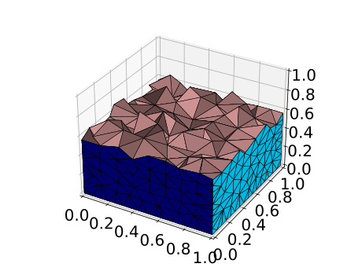
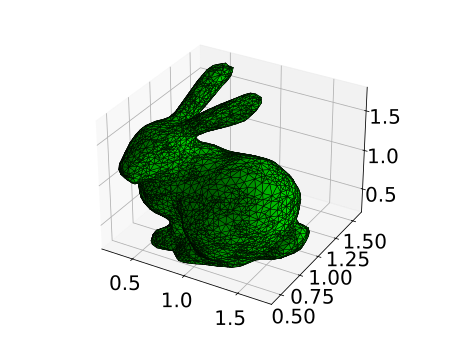

3D Tetrahedralizations
These examples can be loaded into Julia (Revise.jl recommended)
These examples retur an ExtendableGrid with default simplex grid data.
The control flags for TetGen are created based on default options provided by this module which try to ensure "good" grids for FEM and FVM computations. These are documented in SimplexGridFactory.default_options Occasional options! statements in the examples overwrite these defaults.
Domain triangulation
Here we just describe a domain as a polygon and mesh it. This test code is released under the license conditions of TetGen.jl
using SimplexGridFactory
using ExtendableGrids
using LinearAlgebra
using TetGen
function tetrahedralization_of_cube()
builder = SimplexGridBuilder(; Generator = TetGen)
p1 = point!(builder, 0, 0, 0)
p2 = point!(builder, 1, 0, 0)
p3 = point!(builder, 1, 1, 0)
p4 = point!(builder, 0, 1, 0)
p5 = point!(builder, 0, 0, 1)
p6 = point!(builder, 1, 0, 1)
p7 = point!(builder, 1, 1, 1)
p8 = point!(builder, 0, 1, 1)
facetregion!(builder, 1)
facet!(builder, p1, p2, p3, p4)
facetregion!(builder, 2)
facet!(builder, p5, p6, p7, p8)
facetregion!(builder, 3)
facet!(builder, p1, p2, p6, p5)
facetregion!(builder, 4)
facet!(builder, p2, p3, p7, p6)
facetregion!(builder, 5)
facet!(builder, p3, p4, p8, p7)
facetregion!(builder, 6)
facet!(builder, p4, p1, p5, p8)
simplexgrid(builder; maxvolume = 0.001)
end
Cube based on primitves
We can also use predefined primitives to combine geometries
function tet_cube_with_primitives()
builder = SimplexGridBuilder(; Generator = TetGen)
facetregion!(builder, 1)
cellregion!(builder, 1)
maxvolume!(builder, 0.1)
regionpoint!(builder, (0.5, 0.5, 0.5))
rect3d!(builder, (0, 0, 0), (10, 10, 10))
facetregion!(builder, 2)
cellregion!(builder, 2)
maxvolume!(builder, 0.05)
regionpoint!(builder, (4.5, 4.5, 4.5))
rect3d!(builder, (3, 3, 3), (5, 5, 6))
facetregion!(builder, 3)
cellregion!(builder, 3)
maxvolume!(builder, 0.025)
regionpoint!(builder, (7, 7, 5))
sphere!(builder, (7, 7, 5), 2; nref = 3)
facetregion!(builder, 4)
holepoint!(builder, (2, 7, 5))
sphere!(builder, (2, 7, 5), 1.5; nref = 3)
simplexgrid(builder)
end
Glue-in of existing grid
The bregions! method allows to extract parts of the geometry description from an already existing grid.
function glue_3d()
h0 = 1.0
X0 = -2:h0:12
Z0 = -2:h0:6
g0 = simplexgrid(X0, X0, Z0)
h = 0.25
X = 0:h:10
Z = 0:h:4
grid3 = simplexgrid(X, X, Z)
b = SimplexGridBuilder(; Generator = TetGen)
bregions!(b, g0, 1:6; facetregions = [8 for i = 1:7])
cellregion!(b, 2)
regionpoint!(b, (-1, -1, -1))
bregions!(b, grid3, 1:6)
holepoint!(b, (5, 5, 2))
gouter = simplexgrid(b; maxvolume = 0.4, nosteiner = true)
glue(gouter, grid3; g1regions = 1:6, interface = 7)
end
Load STL model
The model3d! method allows to load an stl model into the builder.
function stl_3d()
modeldir = joinpath(dirname(pathof(TetGen)), "..", "test", "surfaceModels")
modelfile = joinpath(modeldir, "stanford_bunny.stl")
b = SimplexGridBuilder(; Generator = TetGen)
facetregion!(b, 2)
model3d!(b, modelfile; scale = 1 / 100, translate = (1, 1, 1), cellregion = 3)
simplexgrid(b; maxvolume = 1.0e-2)
end
Plot generation
using GridVisualize
function generateplots(picdir; Plotter = nothing)
if isdefined(Plotter, :gcf)
size=(300,300)
Plotter.clf()
gridplot(tetrahedralization_of_cube(); Plotter, size, zplane = 0.5)
Plotter.savefig(joinpath(picdir, "tetrahedralization_of_cube.svg"))
Plotter.clf()
gridplot(tet_cube_with_primitives(); Plotter, size, zplane = 5, azim = 47, elev = 80, interior = false)
Plotter.savefig(joinpath(picdir, "tet_cube_with_primitives.svg"))
Plotter.clf()
gridplot(glue_3d(); Plotter, size, azim = 0, elev = 15, xplanes = [5])
Plotter.savefig(joinpath(picdir, "glue_3d.svg"))
Plotter.clf()
gridplot(stl_3d(); Plotter, size, xplanes = [5])
Plotter.savefig(joinpath(picdir, "stl_3d.svg"))
end
endThis page was generated using Literate.jl.